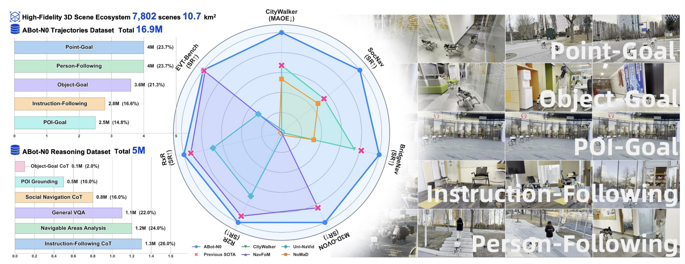
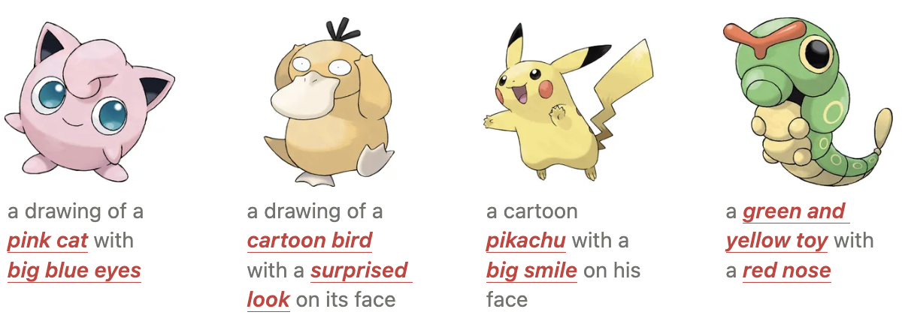
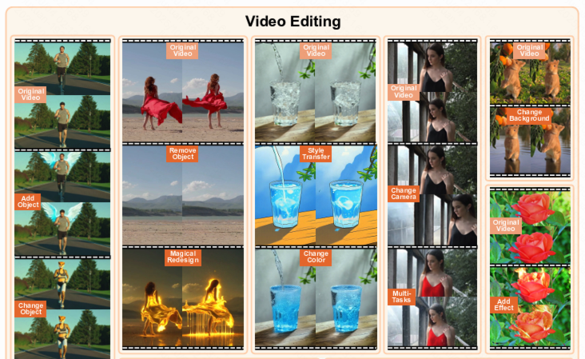
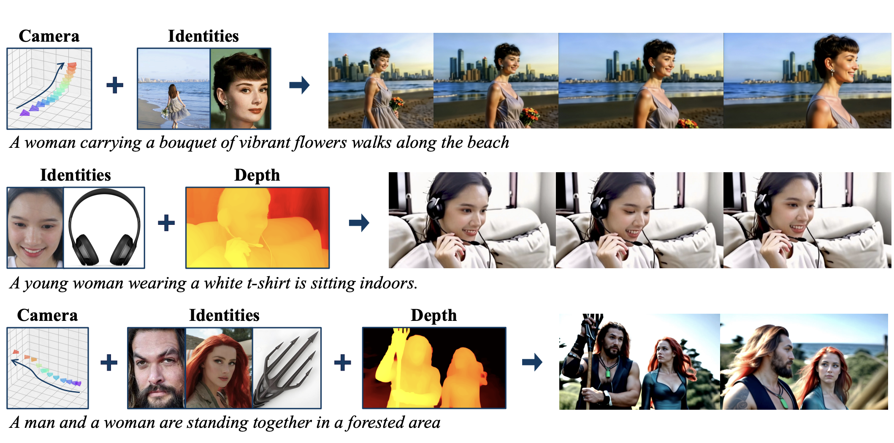

|
Computer Vision Researcher @ Alibaba Group |
|
Biography
I'm Yuxiang Zhao (赵煜翔), currently serving as a Computer Vision Researcher at Alibaba Group. My work here focuses on exploring the cutting-edge frontiers of Embodied Artificial Intelligence. Previously, I gained valuable research experience at Baidu, where my work centered on conditional anime generation—laying a solid foundation for my expertise in generative models and visual content creation.
I graduated from Sun Yat-sen University in 2024, and my long-term research goal is to build scalable, multi-modal human-like intelligent agents. A key focus of my research lies in developing Large Motion Models capable of capturing, understanding, interacting with, and generating the motion dynamics of humans, animals, and the broader physical world.
News
- [09/2025] We release a unified image/video editing/generation framework, EditVerse.
- [06/2025] FullDiT (a multi-task video generation model based on full-attention) is accepted to ICCV 2025, see you in Hawai'i!
- [05/2025] We are hosting the CVPR 2025 Workshop on Efficient and On-Device Generation (EDGE).
- [04/2025] Start an internship in Adobe Research with Soo Ye Kim and Zhe Lin.
- [04/2025] VideoPainter and Cobra are accepted to SIGGRAPH 2025.
Working Experience
|  |
Computer Vision Researcher, Alibaba Group
Topic: Embodied Artificial Intelligence
Supervised by: Yanqinq Zhu and Mu Xu
|
|
Computer Vision Researcher, Baidu
Topic: Conditional Cartoon Generation
Supervised by: Yicheng Zhao and Chenghui Liu
|
|
|  |
Computer Vision Researcher, Meituan
Topic: Image Caption Generation
Supervised by: Jiuchong Gao
|
Selected Publications
|  |
CoEvoer: Collaborative Evolution Transformer for Upper-Body Expressive Human Pose and Shape Estimation
The 40th Annual AAAI Conference on Artificial Intelligence (AAAI), 2026
Project
arXiv
Code
Benchmark
Slides
|
|  |
Cross Time Domain Intention Interaction for Conditional Trajectory Prediction
The 33rd ACM International Conference on Multimedia (ACMMM), 2025
Project
arXiv
Video
Data
|